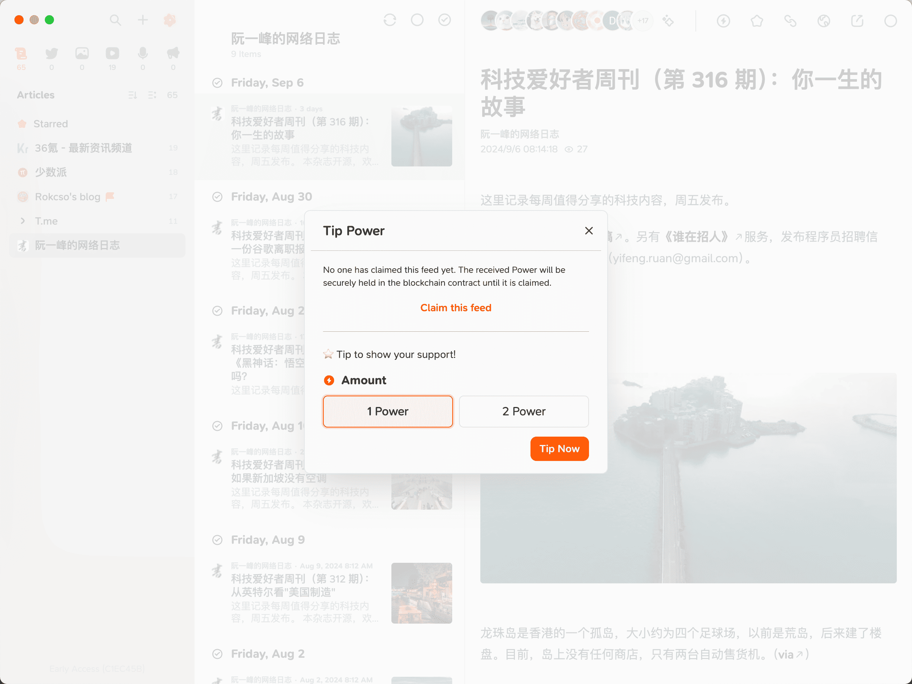

Follow 中如何 Claim 自己的博客
Follow 是一个 RSS 阅读器，除了提供绝大多数 RSS 阅读器都具备的功能之外，Follow 还做了一件非常划时代的事情。
$POWER
Power 是 VSL 区块链 上的 ERC-20 代币。

Power 有两种类型：
Daily Power
- 来源：每天可以免费领取 2 个 Daily Power
- 用处：只能用于打赏
Cashable Power
- 来源：用户充值或收到打赏
- 用处：用于打赏或者提取到钱包中进行交易
Follow 用户可以通过 Power 对订阅的 RSS Feed 进行打赏，而 RSS Feed 的创作者所获得的 Power 打赏将变成 Cashable Power 成为创作者实实在在的收益。

Foolow 创造了一种全新的（我不确定，但我之前没见过）内容消费和创作者收益模式。如果你是一名内容创作者，你可以通过在 Follow Claim 自己的 Feed 以领取别人给你打赏的 Power。
如果你没有 Claim 你的 Feed，该 Feed 所收到的所有 Power 打赏都将被安全地保存在区块链合同中，直到 Feed 被 Claim。
Feed Claim
Follow 提供了 3 种 Feed Claim 验证方案，三种方案异曲同工，都是将 feedId 和 userId 添加到 Feed 的 RSS 代码中。选择其中一种即可。
Content
通过发布一篇带有 feedId 和 userId 的文章，内容可以使用 Follow 提供的：
This message is used to verify that this feed (feedId:00000000000000000) belongs to me (userId:00000000000000000). Join me in enjoying RSS on the next generation information browser https://follow.is.
注意要保证这篇文章能够被渲染到最终生成的 RSS 文件中（可以通过检查最终生成的 RSS 文件内容来确定），所以最好不要将这篇文章隐藏。
Description
直接把 feedId 和 userId 加入到 RSS 代码的 <description> 标签中，RSS 代码中的 <description> 标签包含的内容一般是 Feed 正文内容，所以本质上还是在发布的内容中添加 feedId 和 userId（类似 Content 方案）。
比如可以直接在发布的文章内容末尾加上：
feedId:00000000000000000+userId:00000000000000000
对于大多数博客来说，RSS 文件一般是自动生成的（即使修改后下次部署依然会重新生成覆盖），或者不希望将 feedId 和 userId 直接暴露在博客前端页面中。
所以建议采取第 3 种方式，直接修改 RSS 生成器，保证每次博客内容更新生成的 RSS 文件中都带有 feedId 和 userId。
RSS Tag
我的博客使用 Hugo 框架搭建，所以本文以此为例。
建议先查看 Hugo 对于其 RSS templates 的说明，使用 Hugo 搭建的博客的 RSS 生成依赖于该 Template 代码。
在自己 Hugo 博客源代码的 layouts/_default 文件夹下创建一个 rss.xml，将 Hugo 提供的 RSS Template 代码 复制粘贴进去，在 <channel> 标签中添加 Follow 提供的 XML 代码即可。
<follow_challenge>
<feedId>00000000000000000</feedId>
<userId>00000000000000000</userId>
</follow_challenge>
其实也可以添加在 <description> 标签中，相当于给每篇文章都添加了 feedId 和 userId，而添加到 <channel> 则相当于对整个站点进行添加。
注意：如果使用的 Hugo 主题已经提供了 rss.xml 就直接修改主题的 rss.xml，以免发生冲突。
最后重新部署 Hugo，检查 public 文件夹下的 index.xml 可以发现 feedId 和 userId 已经正确的出现在最终生成的 RSS 代码中了。
成功 Claim 的 Feed 在 Follow 中将被标上旗帜：

注意：如果你使用 Hugo 官方提供的 RSS Template 代码，请务必注意其对于 Hugo 版本的最低要求。
我在使用了 Hugo 官方提供的 RSS Template 代码后重新部署博客，在本地测试正常，部署到 Cloudflare Pages 就报错提示 transform.XMLEscape 方法异常，检查了 Hugo Functions 说明文档 后发现 transform.XMLEscape 方法在 v0.121.0 版本进行了更新。
而我部署在 Cloudflare Pages 上使用的 Hugo 版本为 v0.118.0，在 Cloudflare Pages 项目设置中添加一个 HUGO_VERSION 的环境变量即可解决。